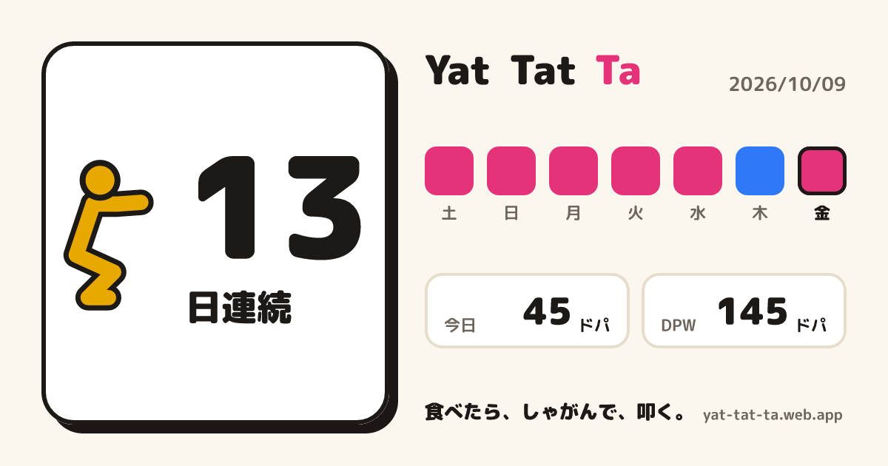
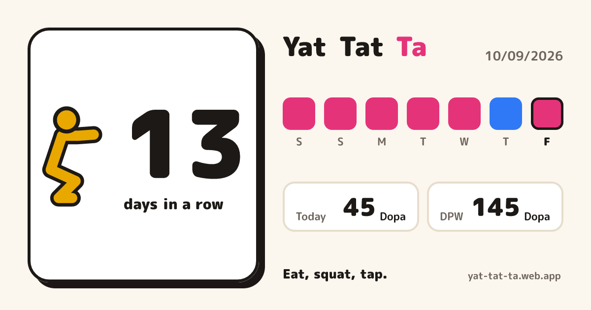
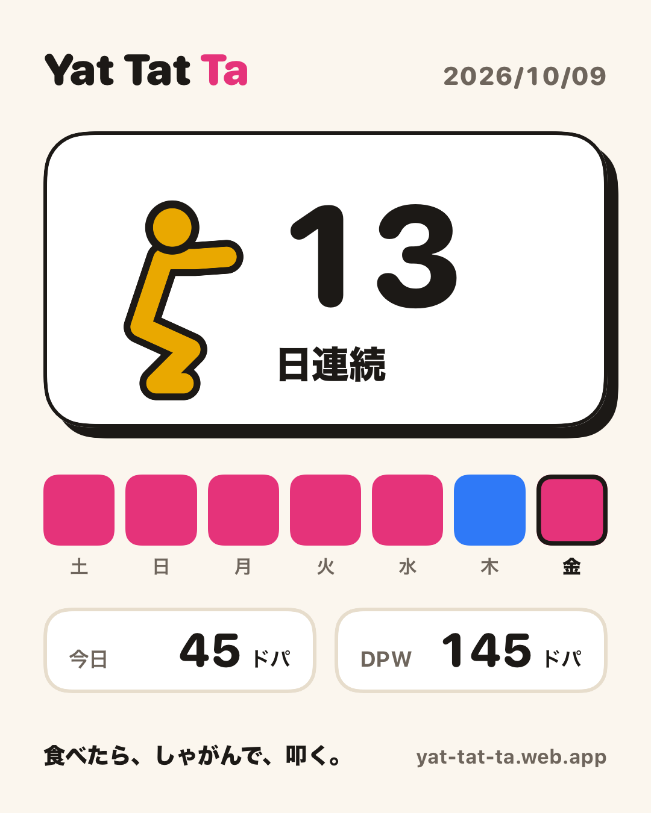
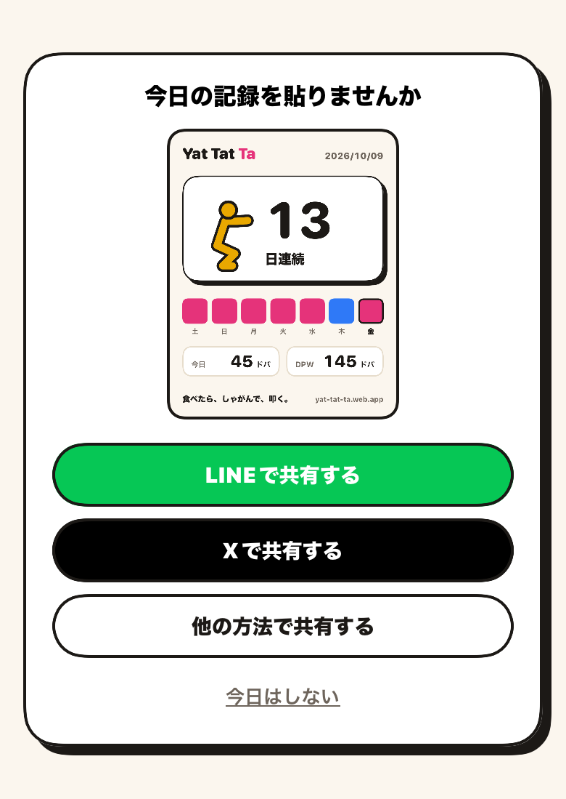

今日の記録カード
続けた日数と、この7日の叩き方を1枚の画像にして、利用者が自分で SNS に貼れるようにする。開発者の投稿だけでは届く数に上限があり、宣伝を運ぶのは利用者の投稿だからです。今日まだ貼っていない人には、アプリを開いたときと叩き切ったあとに共有の誘いで勧めます。渡し方は3つ。「LINEで共有する」「Xで共有する」は横長のリンクカードの URL を、「他の方法で共有する」は縦長の画像そのものを渡します。次のリリースで出す（開発者が決定、2026-10-09）。
01 / why
なぜ、筋肉確定の瞬間ではないのか
いちばん盛り上がるのは、叩き切ったあとの筋肉確定です。そこに共有のボタンを出す案もありました。ただ、演出は数秒で流れていき、ボタンを出せばその途中に割り込みます。
そこで、叩き終えて落ち着いてから開く今日の記録のシートに、共有の口を置きました（開発者が決定、2026-10-09）。カードはいつ出しても同じ形です。Wordle の絵文字のマス目がそうだったように、見た人が形で「あのアプリだ」と覚えられる。動画は作らず、画像だけにしました。
課題 share-result では、公開から2週間たち、利用者が何を貼っているかを見てから形を決めるつもりでした。開発者の指示で、公開前に作ることにしています。利用者の投稿が見えてきたら、形を見直す余地は残っています。
シートに置くだけでは足りませんでした。開発者が実機で触ってみると、共有のボタンがどこにあるのか分かりにくい（2026-10-09）。今日の記録のシートは、連続記録の帯の左側を押さないと開かないからです。そこで、今日まだ貼っていなければ、アプリを開いたときと叩き切ったあとの演出が終わったときに、ホームの下から共有の誘いを出すことにしました。演出の途中には割り込まないので、筋肉確定を避けた理由とはぶつかりません。チュートリアルにも「記録を貼る」場面を足し、最初の1回の前にカードの形を見せます。
リリースも早めました。カードの形がいい、というのが開発者の判断で、公開2週間を待たずに次のリリースで出します（開発者が決定、2026-10-09）。
同じ日に、共有のボタンを「LINEで共有する」「Xで共有する」「他の方法で共有する」の3つに分けたい、という注文が来ました。ここで壁に当たります。LINE と X の投稿画面には、アプリから画像を渡せない。渡せるのは文と URL だけです。画像を端末の中だけで作っている限り、LINE や X が URL から読みに行ける場所に、カードがありません。
そこで、LINE と X のときだけ、カードの数字をサーバーに送ることにしました。サーバーが決まった形でカードを描いて置き、その URL を投稿画面に渡す。LINE と X は URL を読みに来て、OGP のリンクカードとして出します。画像を先に作っておく形も、カードを押したら LP へ移る形も、開発者の提案です（2026-10-09）。「他の方法で共有する」は、これまでどおり共有シートに縦長の画像ごと渡し、サーバーには何も送りません。
02 / rules
決まりごと
表1 今日の記録カードの決まり
| 項目 | 決まり | 理由 |
|---|---|---|
| 出す場所 | 今日の記録のシートのいちばん上に、3つの共有のボタンを並べる（2026-10-09、左上のメニューでは分かりづらいと言われて改めた）。1度も叩いていない人には出さない。ほかに、共有の誘いとチュートリアルの「記録を貼る」場面 | 演出の途中に割り込まない。叩いていなければ、載せる数がない。 |
| 誘う時機 | アプリを開いたとき（その日最初ならスプラッシュとチュートリアルが消えたあと）と、叩き切ったあとの演出が終わったとき。練習連打のあとは誘わない。途切れたときのカードや通知の問いかけが閉じたときにも、もう一度見る | 叩いた直後がいちばん貼りたい時。開いたときにも誘うのは、叩いたあとすぐ閉じた人が、あとから開いたときに貼れるように。 |
| 誘う条件 | 今日の記録が1件以上あり、今日まだ共有していず、「今日はしない」も押していない。スプラッシュ、チュートリアル、フィナーレ、叩いている最中、途切れたときのカード、通知の問いかけがどれも出ていない | 今日まだ叩いていなければ、今日のマスは空で、貼るものがない。重ね物の上に重ねると、どちらも読まれない。 |
| 共有したかの判定 | LINE と X は、投稿画面を開けたら「共有した」にする（投稿したかまでは分からない）。他の方法は、iOS の共有シートで送り終えたときだけ、その記録日を「共有した日」として端末に残す（sharedDay）。シートを閉じただけなら残さない。「今日はしない」を押した日も別に残す（shareDeclinedDay）。シートの上のボタンから送っても同じ | 送ったかどうかを受け取るために、ShareLink ではなく UIActivityViewController を使う。閉じただけで「共有した」にすると、迷っただけの人を二度と誘えない。 |
| 渡し方 | 「LINEで共有する」（LINE の緑）「Xで共有する」（黒）「他の方法で共有する」（枠だけ）の3つ。誘いではその下に、文字のリンクで「今日はしない」 | 開発者の注文（2026-10-09）。貼る先を先に選べれば、共有シートの中で LINE や X を探さずに済む。 |
| チュートリアル | 「続けた日」と「ためたドパ」の間に「記録を貼る」場面。初めての日に目標回数を1回叩いたときの見本のカード（1日連続）と、どこから貼れるかを見せる。叩けば進む | 最初の1回で誘いが出たとき、何のカードか分かっているように。 |
| 載せるもの | いまの連続記録の日数、6日前から今日までの7マスと曜日、今日のドパ、DPW、日付、「食べて、しゃがんで、連続タップ。」、yat-tat-ta.web.app | 続けた日数がいちばん大きい。7マスは、日数だけでは分からない休み方まで見せる。 |
| 7マスの色 | 叩いた日はピンク、休み券でつないだ日は青（アプリの休み券と同じ色）、叩かなかった日は空。今日のマスだけ太い枠 | 連続が切れていない理由が、見た人にも形で分かる。今日まだ叩いていなければ、今日は空のまま出る。 |
| 大きさと色 | 1080 × 1350 ピクセル（4:5）。画面の色の設定によらず、いつも明るい色で描く | X にもストーリーにも、そのまま貼れる。暗い色のときだけ見た目が変わると、形で覚えてもらえない。 |
| 添える文 | 「Yat Tat Ta でN日連続。食べて、しゃがんで、連続タップ。https://yat-tat-ta.web.app」。英語の端末では英語 | 共有先のアプリが文も受け取れるとき、どこのアプリかが分かるように。 |
| ハッシュタグ | X に共有するときだけ、文と URL の間に #YatTatTa #食後スクワット を付ける。英語のときは #YatTatTa だけ。X アプリがなく Web の投稿口を開くときは、hashtags の欄で渡す | 利用者の投稿を、アプリの名前で検索して拾えるようにする。やっていることのタグは、アプリを知らない人の検索にも引っかかる（開発者が決定、2026-10-09）。URL を最後に置くのは、X がいちばん最後の URL からカードを作るから |
| LINE の文 | 「Yat Tat Ta でN日連続！」、7マスを絵文字で（叩いた日 🟥、休み券の日 🟦、叩かなかった日 ⬜、古い日から今日へ）、「今日はNドパ、この7日でNドパ。」、「食べて、しゃがんで、連続タップ。」、URL の5行 | LINE のプレビューは右の小さな正方形で、カードの数字が読めない。メタタグを5通り変えても大きくならなかったので、文でカードの中身を伝える（開発者が決定、2026-10-09） |
| 書かないこと | 体への効果、パチンコやくじの語 | SNS で発信するときの決まり事の1と2。利用者が貼る画像でも、文言を決めているのはこちら。 |
| 送るもの | LINE と X のときだけ、カードの数字（日付、連続日数、7マス、今日のドパ、DPW、言語）をサーバーの関数に送る。ログイン中（匿名を含む）のアプリからだけ受け付け、App Check も確かめる。uid は確かめるのに使うだけで、残さない。他の方法では何も送らない | LINE と X に画像は渡せないので、カードを URL の側に持たせるしかない。数字だけなら、記録を丸ごと送らずに済む。プライバシーポリシーに書き足した（2026-10-09）。 |
| 画像を描く場所 | LINE と X のリンクカードはサーバーが描く。アプリからは画像を受け取らない | 任意の画像を受け取って公開すると、利用者の作った物を配ることになり、悪用の口にもなる。数字だけなら、偽っても数字が違うカードができるだけ。 |
| 数字の確からしさ | アプリの申告を信じる。ありえない値（負の数、7マスが7文字でない、など）だけを断る | サーバーで記録から計算し直すと、連続記録と休み券の計算をもう1つ持つことになる。Wordle のマス目と同じく、自己申告と割り切る。 |
| 失敗したとき | 電波がない、関数が失敗した、投稿画面を開けなかったときは、共有シートで縦長の画像ごと渡す | 押したのに何も起きない、を作らない。 |
| 作った画像 | 消さない。1枚およそ50KB | 消すと、過去の投稿のカードが出なくなる。Cloud Storage の無料枠 5GB に収まる。 |
03 / link card
LINE と X に、カードはどう届くのか
投稿画面に渡すのは文と URL だけです。カードは、その URL を LINE と X が読みに来たときに出ます。
- 1. 利用者が「Xで共有する」を押す。
- 2. アプリは、ログインのトークンを付けて、カードの数字を関数（createShareCard）に送る。
- 3. 関数は値の範囲を確かめ、横長のカードを描いて Cloud Storage の
share/[ハッシュ].pngに置き、https://yat-tat-ta.web.app/s/[ハッシュ]を返す。同じ見た目なら同じハッシュになり、2度は描かない。 - 4. アプリは X アプリの投稿画面（
twitter://post?message=、文の最後に URL）を開く。X アプリが入っていないときだけ、Web の投稿画面（x.com/intent/post）を、文と URL を入れて開く。LINE はline.me/R/shareに、文の最後に URL を付けて渡す。 - 5. 投稿されると、X のクローラーが
/s/[ハッシュ]を読みに来る。関数（share）は、og:imageに/s/[ハッシュ].pngを入れた HTML を返す。 - 6. クローラーが画像を読みに来る。置いてある画像をそのまま返す。HTML も画像も中身が変わらないので、Hosting の CDN に1年覚えさせる。
- 7. タイムラインに、文とリンクカードが並ぶ。見た人がカードを押すと、ブラウザは JavaScript で LP（英語なら
/en/）へ移る。
人だけを LP に移すのに、HTTP のリダイレクトは使えません。クローラーまで LP に移り、LP の OGP が出てしまうからです。クローラーは JavaScript を動かさないので、JavaScript で移せばクローラーはメタタグを読み、人は LP に着きます。クローラーにも人にも、同じ HTML を返しています。


04 / screens
関連する画面
05 / components
関連するコンポーネント
サンプル：13日連続、今日45ドパ、DPW 145ドパ。木曜日は休み券でつないだ。アプリが書き出した画像そのものです。

- しゃがんだスクワットマン：ホームと同じ部品で描く。主役はスクワットマンという決まり事の7のとおり。
- 7マス：左が6日前、右端の太い枠が今日。下に曜日。
- 今日と DPW：ドパの数だけ。回数や件数は載せない。
- いちばん下：はじめての幕と同じ「食べて、しゃがんで、連続タップ。」と、公開ページの URL。
共有の誘いと、チュートリアルの「記録を貼る」場面。どちらもアプリが書き出した画像です。


06 / links